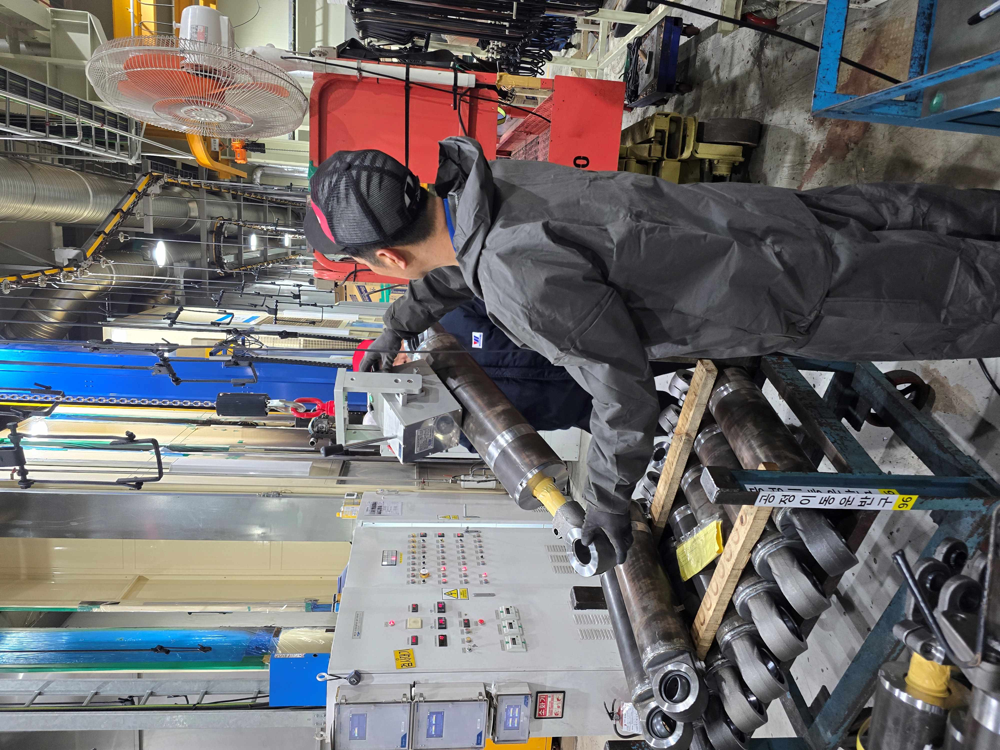
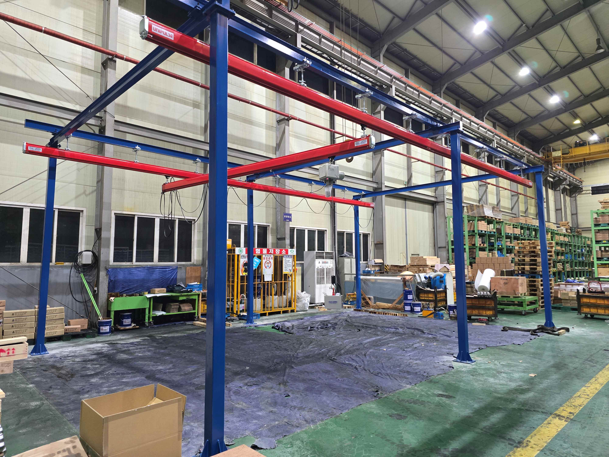
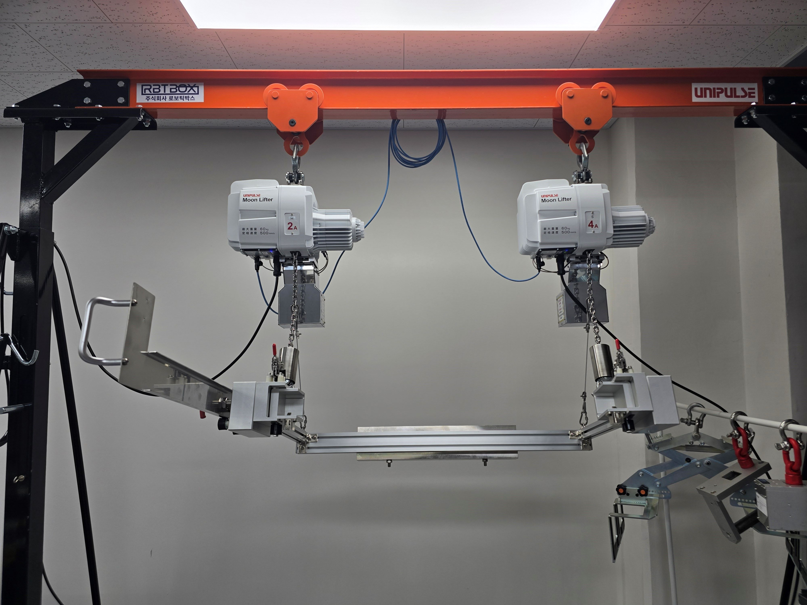
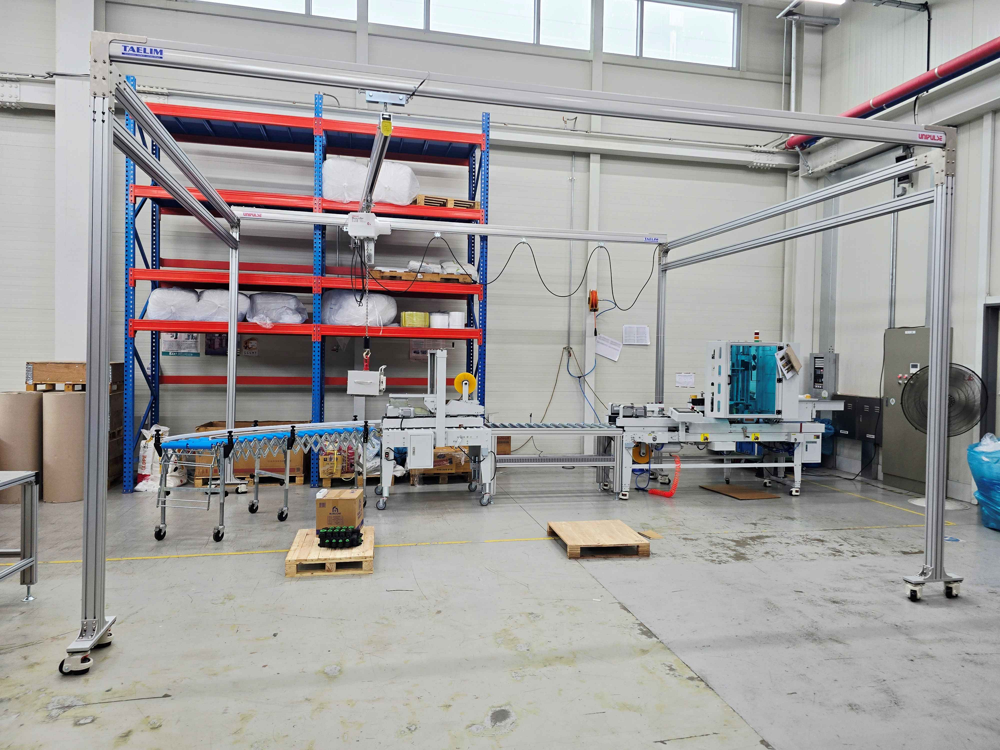
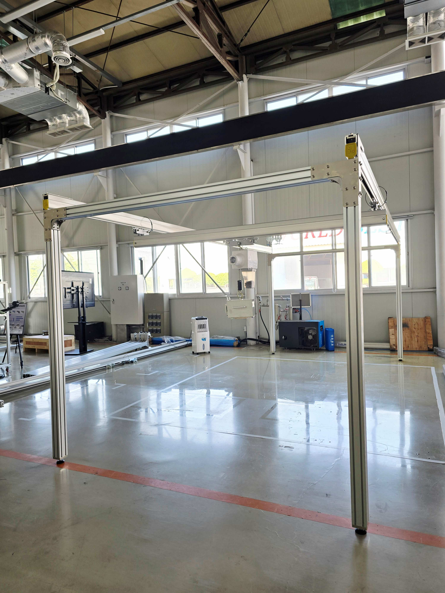
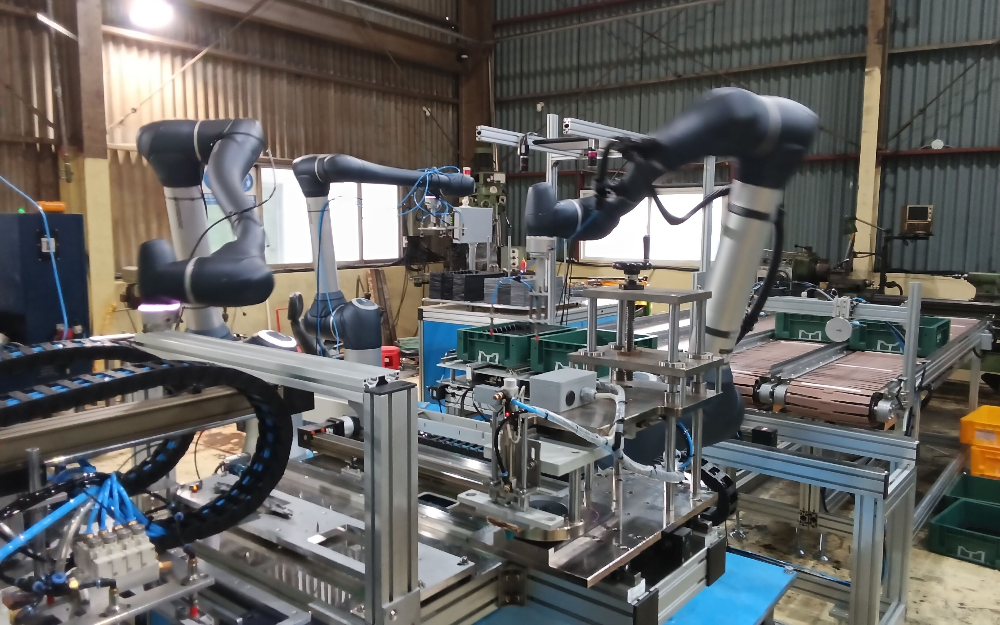
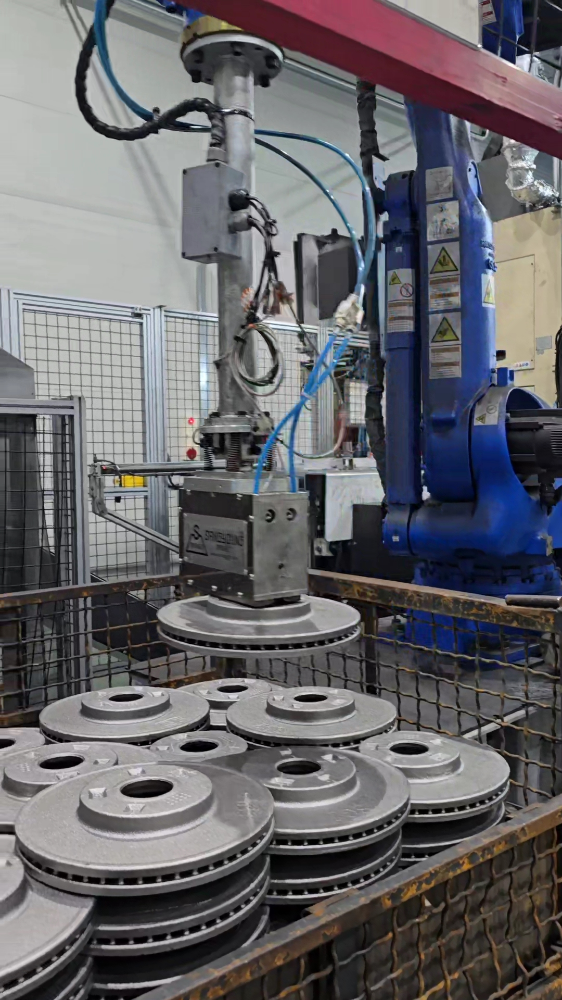

중량물 이송, 포장 전후 이송, 팔레트 간 이동, 반복 투입·취출, 검사·적재·분류 등 제조현장의 이송 병목 구간을 우선 검토합니다.
PROCESS-CENTERED MATERIAL TRANSFER AUTOMATION
제조공정의 이송 문제를 분석해,
공정 조건에 맞는
자동화 이송 구조를 설계합니다.
로보틱박스(ROBOTICBOX)는 제조공정의 중량물 이송 문제를 분석하고, 작업자 보조형 이송 장치, 전동밸런서, Jig(Gripper), Rail / KBK, Robot · AI Vision을 공정 조건에 맞게 조합합니다.
ROBOTICBOX는 특정 장비 판매보다 공정 조건에 맞는 이송 구조 설계를 우선합니다.
단순 장비 판매가 아니라, 실제 공정에 바로 적용 가능한 표준 패키지와 현장 옵션 구조로 빠르게 제안하는 것이 핵심입니다.
- 제조공정 이송 문제 진단 중량물, 부품, 팔레트 간 이동, 포장 전후 이송, 반복 투입·취출 등 공정 내 병목 구간을 먼저 정의합니다.
- 대상물별 Jig(Gripper) 설계 철계 중량물은 Magnetic Type Jig, 비철·박스·표면 민감 제품은 Clamp / Vacuum / Custom Jig 방식으로 검토합니다.
- 단계적 자동화 구조 제안 작업자 보조형 이송부터 Robot · AI Vision 연계 자동화까지, 가장 개선 효과가 큰 구간부터 단계적으로 제안합니다.
Moon Lifter는 작업자의 힘을 감지하고 하중을 보조하는 작업자 보조형 이송 장치입니다. Jig(Gripper)는 작업물을 직접 잡는 주먹 역할을 하며, Rail / KBK 구조는 이송 범위와 동선을 잡아주는 구조물입니다.
※ Moon Lifter는 작업자 보조형 이송 구간에 적용되는 주요 구성 요소 중 하나입니다.
특정 장비 판매가 아니라, 공정 조건 진단 → 적용 구조 선택 → 현장 옵션 설계 → 설치·운영 대응 순서로 제안합니다.
ROBOTICBOX Field References
Process-Driven SI

유압실린더 제조 공정

중대형 볼트 이송

반도체 챔버 반전 지그
반복 이송·검사·적재는 Robot, AI Vision, 전용 Gripper 조합으로 정리합니다.
작업자 인접 공정은 작업자 보조형 이송 장치와 대상물 조건에 맞는 Jig(Gripper)를 함께 적용합니다.
반전, 반복 투입, 유체 취급, 협소 공간, 정밀 안착처럼 현장별 특이점이 있는 공정은 맞춤형 Jig(Gripper)와 Rail / KBK 구조로 해결합니다.
Business Axis
ROBOTICBOX가 제안하는 3가지 이송 자동화 축
작업자 보조형 이송 솔루션
중량물 수작업 이송, 호이스트 보완, 포장 전후 이송, 팔레트 간 이동 등 작업자 부담이 큰 구간을 개선합니다.
특수 Jig / Gripper 솔루션
철계 중량물, 비철 제품, 박스형 제품, 표면 민감 제품 등 대상물 조건에 맞는 Gripper 방식을 설계합니다.
Robot · AI Vision 연계 자동화
반복 검사, 로봇 적재, 분류, 안전 관제, 라인 연계 등 확장형 자동화를 제안합니다.
Problem Definition
중량물 이송 공정은 장비보다 먼저, “무엇을 어떻게 잡고 어디까지 이동시킬 것인가”를 정리해야 합니다.
제조 현장의 이송 문제는 단순히 호이스트, 전동밸런서, 로봇을 넣는다고 해결되지 않습니다. 대상물의 무게, 형상, 재질, 표면 상태, 작업자의 개입 정도, 공정 특이점, 설치 공간, 안전 조건을 함께 정의해야 실제 운영 가능한 자동화 구조가 나옵니다.
어디까지 자동화할지 모름
공정 시작점과 종료점이 정리되지 않으면 설비를 넣어도 병목과 재작업이 남습니다.
장비만으로 해결되지 않음
같은 중량물 이송이라도 대상물을 잡는 방식, 이동 동선, 작업자 개입 조건에 따라 필요한 구조가 달라집니다.
대상물 조건이 까다로움
철계 부품, 비철 부품, 박스형 제품, 원통형 제품, 표면 민감 제품처럼 대상물의 재질과 형상에 따라 Jig(Gripper) 방식이 달라집니다.
공정 특이점이 존재함
180도 반전, 반복 투입·취출, 유체가 담긴 제품, 기울이면 안 되는 제품, 정밀 안착, 협소 공간, 팔레트 간 이송처럼 현장별 특이점이 있는 공정은 단순 이송 장비만으로 해결하기 어렵습니다.
안전과 운영이 분리됨
작업자 동선, 위험 구역, 인터락, 유지보수 조건을 함께 보지 않으면 개선 효과가 제한됩니다.

Reference
완제품 유압기기 포장 이송
완제품 팔레트에서 포장 기기로 연결되는 구간을 보조이송 구조로 개선합니다.

Reference
방산 탄피철통 이송
안전성과 반복 취급 부담이 중요한 현장에서 일관된 이송 흐름을 만듭니다.

Reference
AI Vision 검사 적재
반복 검사와 적재 공정을 하나의 자동화 흐름으로 연결합니다.
Decision Framework
ROBOTICBOX는 먼저 공정 유형과 특이점을 나누고, 그에 맞는 이송 구조와 Jig(Gripper)를 조합합니다.
모든 제조공정을 같은 장비로 해결하지 않습니다.
반복성과 정형도가 높은 공정은 Robot · AI Vision으로, 작업자가 가까이 개입하는 공정은 작업자 보조형 이송 장치와 Jig(Gripper)로, 특수 형상과 공간 제약이 큰 공정은 맞춤형 Jig와 Rail / KBK 구조로 나누어 접근합니다.
Moon Lifter는 작업자 보조형 이송 구간에 적용 가능한 주요 구성 요소 중 하나입니다.
Magnetic Lift는 철계 중량물 공정에 적용되는 Jig(Gripper) 유형 중 하나이며, 대상물 조건에 따라 Clamp Type, Vacuum Type, Custom Type Jig로 확장할 수 있습니다.
반복·정형 공정 자동화
- 반복 검사, 적재, 분류, 조립처럼 리듬이 일정한 구간
- Robot과 AI Vision을 결합해 검사·적재·이송 흐름 구성
- 생산성, 일관성, 무인화가 중요한 라인형 공정에 적합
작업자 보조형 이송 공정
- 유압실린더, 완제품 유압기기, 탄피철통처럼 사람이 직접 들기 버거운 구간
- 작업자의 힘을 보조하고 하중을 제어하는 Moon Lifter와 대상물 조건에 맞는 Jig(Gripper)를 조합해 중량물 취급 부담과 위험을 줄입니다.
- Moon Lifter는 이 구간에 적용 가능한 주요 장치 중 하나
- 철계 중량물은 Magnetic Type Jig, 비자성체나 박스류는 Clamp / Vacuum / Custom Jig로 검토
- 빠른 설치와 현장 적응성이 중요한 단일·중간 공정에 강점
특수 공정·구조 대응
- 180도 반전, 반복 투입·취출, 유체 취급, 정밀 안착, 팔레트 간 이송, 협소 공간 대응
- 맞춤형 Jig(Gripper), 반전 구조, 경량 Rail / KBK 구조를 공정에 맞춰 설계
- 형상과 공간 제약이 큰 공정을 실제 운영 가능 수준으로 풀어냄
- 단순 이송이 아니라 공정 전후 흐름과 작업자 개입 조건까지 함께 검토
유압실린더
반복 투입·취출
유체 취급
볼트·너트 이송
정밀 안착
반도체 반전
Worker Assist Device
Moon Lifter는 작업자 보조형 이송 구간에서 힘 보조와 하중 제어를 담당합니다.
Moon Lifter는 전동밸런서 방식의 작업자 보조형 이송 장치로, 중량물의 상승·하강과 위치 조정을 부드럽게 보조합니다.
작업자가 가하는 힘과 위치 변화를 감지하고, 서보모터 기반의 보조 제어를 통해 무거운 대상물을 가벼운 힘으로 이동할 수 있도록 돕습니다.
ROBOTICBOX는 Moon Lifter를 단품 장비로만 보지 않습니다.
대상물을 직접 잡는 Jig(Gripper), 이동 동선을 잡아주는 Rail / KBK 구조, 작업자 동선과 안전 조건을 함께 검토해 실제 공정에 적용 가능한 이송 구조로 설계합니다.
하중 보조
작업자가 직접 들어야 하는 하중 부담을 줄여 중량물 이송, 투입, 취출 작업을 더 가볍게 수행할 수 있도록 돕습니다.
작업자 힘 감지
작업자의 조작 힘과 움직임을 감지해 상승·하강 동작을 자연스럽게 보조합니다. 양손으로 대상물을 잡고 위치를 맞추는 작업에 적합합니다.
정밀 위치 제어
중량물의 위치를 미세하게 조정해야 하는 안착, 삽입, 포장 전후 이송 공정에서 안정적인 핸들링을 지원합니다.
안전 연동 가능
속도 제한, 위치 제한, 정지 조건, 외부 I/O 연동을 통해 Jig(Gripper) 파지 신호, 작업자 안전 구역, 인터락 조건과 함께 사용할 수 있습니다.
Role In Structure
Moon Lifter가 담당하는 역할
Moon Lifter는 작업자 보조형 이송 구간의 핵심 장치이지만, 단독으로 모든 공정을 해결하지는 않습니다. ROBOTICBOX는 대상물 조건과 공정 특이점에 맞춰 Jig(Gripper), Rail / KBK, 안전 인터락을 함께 설계합니다.
- Moon Lifter작업자의 팔 + 하중 제어 두뇌
- Jig(Gripper)작업물을 직접 잡는 주먹
- Rail / KBK이송 범위와 동선을 잡아주는 어깨와 몸통
- Safety / Interlock작업자와 설비가 함께 움직이기 위한 안전 조건
※ 상세 제품 사양은 제조사 공식 정보를 참고하시고, 실제 공정 적용 구조는 ROBOTICBOX가 대상물과 현장 조건을 기준으로 검토합니다.
Package Structure
작업자 보조형 이송부터 로봇·AI Vision 연계까지, 공정 조건에 맞춰 단계적으로 제안합니다.
ROBOTICBOX의 강점은 현장 맞춤형 제안이지만, 모든 제안을 처음부터 다시 만들지는 않습니다. 공정 진단을 기준으로 작업자 보조형, 표준 이송형, 공정 확장형 구조를 나누고, 대상물의 재질·형상·중량·이송거리·작업자 개입 정도와 공정 특이점에 따라 필요한 옵션을 더합니다.
작업자 보조 시작형
단일 작업대 또는 짧은 이송 구간에서 작업자 부담을 빠르게 줄이는 도입형 패키지입니다.
- 작업자 보조형 이송 장치 중심 구성
- 대상물 조건에 맞는 기본 Jig(Gripper) 검토
- 짧은 이송 거리와 단일 공정 대응
- 빠른 설치와 즉시성 있는 개선 효과
- 작업자 힘 보조가 필요한 구간은 Moon Lifter와 기본 Jig(Gripper) 중심으로 검토
공정 이송 표준형
ROBOTICBOX의 핵심 조합으로, 작업자의 힘을 보조하는 Moon Lifter, 대상물을 직접 잡는 Jig(Gripper), 이송 동선을 구성하는 Rail / KBK 구조를 묶어 중량물 이송 흐름을 안정화합니다.
- 대상물 조건에 따라 Magnetic / Clamp / Vacuum / Custom Jig 검토
- 포장 전후 이송, 팔레트 간 이동, 반복 투입·취출, 작업자 보조 공정에 적합
- 경량 Rail 또는 KBK 구조와 연계해 이송 동선 구성
- 180도 반전, 유체 취급, 정밀 안착 등 공정 특이점은 옵션 구조로 확장
- 완전 로봇화 이전 단계에서 가장 현실적인 자동화 전환 구조
구성 개념
Jig(Gripper) = 주먹 / 대상물을 직접 잡는 기구물
Moon Lifter = 팔 + 두뇌 / 작업자 힘 감지와 하중 보조
Rail / KBK = 어깨 + 몸통 / 이송 범위와 동선 구조
※ Moon Lifter는 작업자 보조형 이송 장치의 주요 옵션 중 하나입니다. ※ Magnetic Lift는 철계 중량물용 Jig(Gripper) 유형 중 하나입니다.공정 맞춤 확장형
로봇 자동화, AI Vision, 맞춤형 Jig(Gripper), 반전 구조, 천장형 Rail / KBK 구조까지 포함해 복합 공정을 설계하는 확장형 제안입니다.
- 반복 검사, 로봇 적재, 분류, 조립, 안전 관제 공정 대응
- Magnetic / Clamp / Vacuum / Custom Jig 등 대상물별 그리퍼 방식 검토
- 다공정 연계와 특수 기구 설계 포함
- Robot · AI Vision · Safety Monitoring 연계 가능
- 고난도 공정의 표준화 가능한 구조까지 검토
공정 이송 표준형은 완전 로봇화 이전 단계에서 가장 현실적으로 도입 가능한 이송 자동화 구조입니다.
Application Fit Check
이런 이송 문제가 있다면 우선 검토 대상입니다.
ROBOTICBOX는 특정 장비 적용 가능성만 보지 않습니다. 대상물의 재질과 형상, 작업자의 개입 정도, 이송 거리, 공정 특이점, 설치 공간, 안전 조건을 함께 검토해 가장 현실적인 자동화 구조를 제안합니다.
잘 맞는 공정
- 20kg 이상 반복 취급되는 중량물 또는 부품
- 작업자가 직접 들거나 밀어 이동하는 공정
- 팔레트 간 이동, 포장 전후 이송, 투입·취출 공정
- 호이스트·지게차·수작업 사이에서 병목이 생기는 공정
- 완전 로봇화까지는 부담스럽지만 작업 부담 개선이 시급한 공정
- Robot · AI Vision 연계로 검사·적재·분류를 자동화할 수 있는 공정
공정 특이점 체크
- 180도 반전이 필요한 공정
- 반복 투입·취출이 필요한 공정
- 유체 또는 내용물이 담긴 대상물을 다루는 공정
- 기울이면 안 되거나 자세 유지가 필요한 제품
- 표면 손상이나 충격에 민감한 제품
- 정밀 안착 또는 위치 보정이 필요한 공정
- 협소 공간 또는 천장형 구조가 필요한 공정
- 작업자와 설비가 동시에 움직이는 안전 민감 구간
- 기타 특수 자세, 특수 동선, 특수 환경 조건이 있는 공정
검토 시 필요한 정보
- 대상물 중량
- 대상물 재질
- 대상물 형상과 크기
- 현재 작업 방식
- 이송 거리
- 하루 반복 횟수
- 공정 특이점
- 설치 가능 공간
- 사진 또는 짧은 영상
Applied Fields & Processes
ROBOTICBOX는 중량물 이송·부품 취급·검사·적재·반전·포장 연계 공정을 반복적으로 검토해 왔습니다.
업종은 달라도 현장의 이송 문제는 비슷한 구조를 가집니다. ROBOTICBOX는 특정 장비보다 대상물, 작업자 개입 정도, 이송 거리, 공정 특이점, 설치 공간을 기준으로 공정을 분류하고 유사 조건의 표준 구조로 빠르게 검토합니다.
작업자 보조형 이송 · Jig(Gripper) · Rail 적용 공정
사람이 계속 개입해야 하는 중량물 취급 공정, 팔레트 간 이동, 반복 투입·취출, 반전·천장형 구조 공정에서는 작업자 힘 보조와 대상물 파지 방식이 함께 중요합니다. ROBOTICBOX는 Moon Lifter, Jig(Gripper), Rail / KBK 구조를 공정 조건에 맞게 조합해 작업 부담과 이송 리스크를 줄입니다. 철계 중량물은 Magnetic Type Jig를 우선 검토하고, 형상·재질·표면 조건과 공정 특이점에 따라 Clamp Type, Vacuum Type, Custom Type Jig로 확장합니다.
- 유압실린더 제조용접 제조 공정 이송 / 핵심 제조 공정 내 이송 구조 개선
- 유압기기완제품 포장 이송
- 조선 / 기자재중대형 볼트·너트 팔레트 간 이송
- 반도체 부품코팅 공정 이송 및 챔버 내 반전·진입
- 방산 / 군수탄피 철통 이송 공정
Robot · AI Vision · Gripper 연계 공정
반복성과 정형도가 높은 가공·검사·조립·적재 공정은 Robot, AI Vision, 전용 Gripper 조합으로 자동화합니다. 철계 부품은 Magnetic Type Gripper를 적용할 수 있고, 제품 형상과 표면 조건에 따라 Clamp Type, Vacuum Type, Custom Type Gripper로 확장할 수 있습니다.
- 자동차부품 제조디스크브레이크 가공 공정 자동화
- 구동펌프 제조소형 펌프 조립 횡전개 라인 자동화
- 검사·적재·분류 공정반복 검사, 적재, 분류 공정 자동화
- AI Vision 관제AI Vision 기반 작업자 안전 관제 및 공정 모니터링

자동차부품, 구동펌프, 방산·군수 분야를 포함한 전체 적용 공정은 상세 페이지에서 이어서 확인하실 수 있습니다.
Why ROBOTICBOX
장비를 파는 것이 아니라, 공정이 실제로 돌아가는 이송 구조를 설계합니다.
ROBOTICBOX는 작업자 보조형 이송 장치, Jig(Gripper), Rail / KBK, Robot, AI Vision을 각각 따로 제안하지 않습니다.
현장 공정을 먼저 나누고, 사람과 장비가 함께 움직이는 조건에서 실제로 운영 가능한 이송 구조를 설계합니다.
특정 장비 도입이 아니라, 대상물을 어떻게 잡고, 어디까지 이동시키며, 어떤 자세로 안착시킬지까지 함께 검토하는 것이 ROBOTICBOX의 차별점입니다.
작업자 보조형 이송 구간에서는 Moon Lifter가 하중 보조와 조작 감지 역할을 담당하고, Jig(Gripper)는 대상물 파지를 담당하며, Rail / KBK 구조는 이송 동선을 담당합니다.
이 세 가지를 공정 조건에 맞게 조합해야 실제 현장에서 사용 가능한 이송 구조가 됩니다.
공정 기준 판단
무엇을 팔지보다, 어떤 구간을 작업자 보조형으로 가져가고 어떤 구간을 Robot · AI Vision으로 자동화할지 먼저 정리합니다.
Jig(Gripper) 중심의 대상물 대응
철계 중량물, 비철 제품, 박스형 제품, 표면 민감 제품 등 대상물 조건에 따라 Magnetic / Clamp / Vacuum / Custom Jig를 검토합니다.
표준 구조 + 현장 옵션
검증된 이송 구조를 기준으로 Rail / KBK, 반전 구조, 센서, 인터락, 안전 관제 옵션을 필요한 만큼만 추가합니다.
설치 이후 운영까지 고려
안전, 유지보수, 작업자 동선, 후속 공정 확장까지 고려해 단발성 설비가 아닌 운영 가능한 구조를 만듭니다.
Process Diagnosis
우리 공정에 어떤 이송 조합이 맞는지, 먼저 적용 가능성부터 진단해보겠습니다.
공정 시작점과 종료점, 대상물 무게와 형상, 재질, 현재 작업 방식과 공정 특이점만 정리해주셔도 ROBOTICBOX가 작업자 보조형, 공정 이송 표준형, Robot · AI Vision 연계형 중 어떤 방식이 적합한지 먼저 판단합니다.
상담 전 준비 정보
대상물 사진 또는 짧은 영상, 중량, 재질, 현재 작업 방식과 공정 특이점을 공유해주시면 ROBOTICBOX가 적용 가능한 패키지 방향을 1차 검토해드립니다.
검토 가능한 범위
작업자 보조형 이송 구조, 공정 이송 표준형 구조, Robot · AI Vision 연계 자동화, 적합한 Jig(Gripper) 유형과 구조 방향까지 함께 정리합니다.